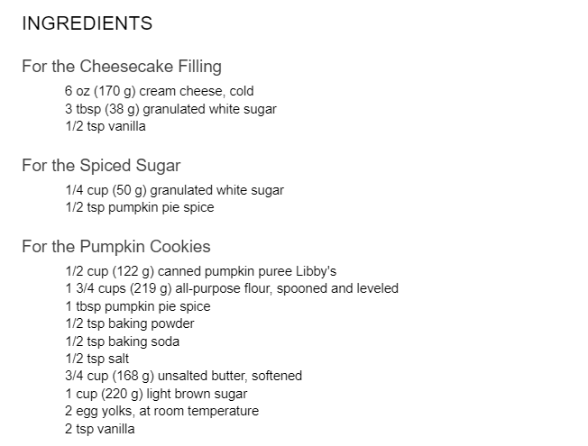
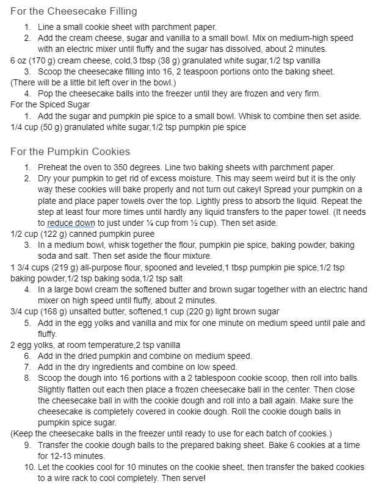

This recipe is important to me because it was the first new recipe I tried after coming to BYU and let me tell you it was an experience in a small apartment, however, I do not regret it. This was given to me by a friend but I am still pretty sure she would have taken it from pinterest. The first time I made these it was for a halloween party my freshmen year and they were a big hit and definitely my favorite pumpkin recipe. - Kayla Drais

